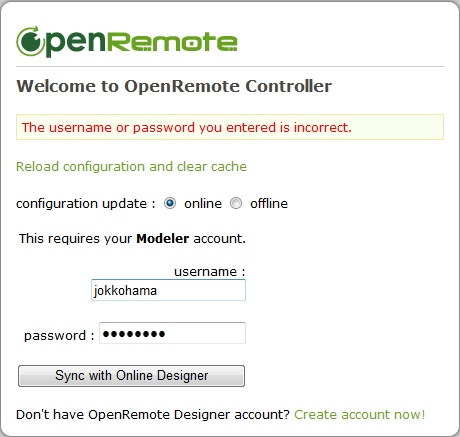

Hi,
I'm new to OpenRemote controller and have a problem to login to the OpenRemote Controller.
This is what I've done:
1. Registered a new an account for OpenRemote Online Designer
2. I am able to login using my credentials
3. Succesfully installed Java SDK 6u29 (I'm running Windows 7 64 Professional)
4. Succesfully started the server (openremote -run) with 1 error message:
INFO: The APR based Apache Tomcat Native library which allows optimal performance in production environments was not found on the java.library.path: D:\Download\OpenRemote\Controller\2.0\webapps\controller\WEB-INF\lib\native
5. I verified my server installation by entering http://localhost:8080/controller in the IE9 browser
6. I get a login screen which says "Welcome to OpenRemote Controller" where I should enter my username and password for my Modeler account
7. Entering the same credentials as in step 2 above (Online Designer) and clicking on "Sync with Online Desinger" I get the following error message: "The username or password you entered is incorrect."

Questions:
1. Is my Modeler account not the same as the Online Designer account? If not, what is the Modeler account? The text at the bottom of the login screen at least indicates it should be the same, or?
2. Why am I getting the INFO message in step 4 above? How come things are missing in a folder which was just unzipped from the download? Where can I find thee Apache Tomcat Native library to make my installation complete for optimal performance.
Any ideas or suggestions are welcome.
Regards
Jokkohama
{kind=link}
|
#1 They're same accounts. Just somewhat confusing terminology. Thanks for pointing out the inconsistency. #2 It's just an INFO message, not an error. The native libs are not necessary. |
|
Hi Juha, Thanks for your answer! Yes, I assumed that OpenRemote Online Designer account was the same as the Modeler account. Any idea why? Firewall? Regards Joakim |
|
Could be a firewall or some other networking issue – can you also try with a different web browser other than IE9 (it's not getting tested much right this moment), just to exclude the possibility of a jQuery/Javascript hickup that might be IE9 specific? |
|
I've the same problem. I've created already a couple of accounts and I didn't succeed to log into the Modeler. I've tried different INTERNET explorers IE, Firefox, ... on LINUX and Windows. There is no firewall issue as I've disabled the firewall. Some advice will be helpful. PS. I'm able to log into the website itself and I assume that the same account is used for the designer. Thanks |
For Website and Designer you need separate accounts. You can request a designer account via the login screen of designer |
|
I am having the same issue. I have login details for 'Confluence' and 'Rosemary', neither of which are being recognized by the OpenRemote Controller. Is there something obvious that I am missing? Edit: Found the solution - my user role needed to be Building Modeler & UI Designer to make this work |